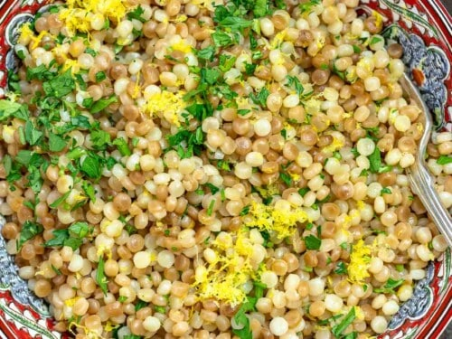

Easy Pearl Couscous Recipe

Description
This is a simple Couscous recipe I have tinkered with to make something good and easy on a weeknight to pair with lefotver chicken, lamb, etc. This dish comes together in 15 minutes or so and makes a good amount for 2 people.
Ingredients
- 2 tbsp Olive Oil
- 1 Shallot
- 1 cup Pearl Couscous
- 1 tbsp Tumeric
- 1 tsp Cumin
- 1 tsp Coriander
- 1 1/2 cup Chicken Stock
- Salt to tast
- 1/2 head of Fresh Parsley
Steps
- Dice shallots
- Heat 2 tbsp of olive oil in a pot
- Add diced shallots and cook for about 2 mins until fragrant
- Add couscous with spices: tumeric, cumin, coriander, and toast until the spices are fragrant
- One spices are fragrant add the chicken stock. Bring to a boil
- Once the broth is boiling, reduce to a simmer, cover and cook for around 7 minutes or until the liquid is evaporated
- While the pot is simmering chop the parley
- When finished add the parsley into the pot, mix and serve
Go back to home